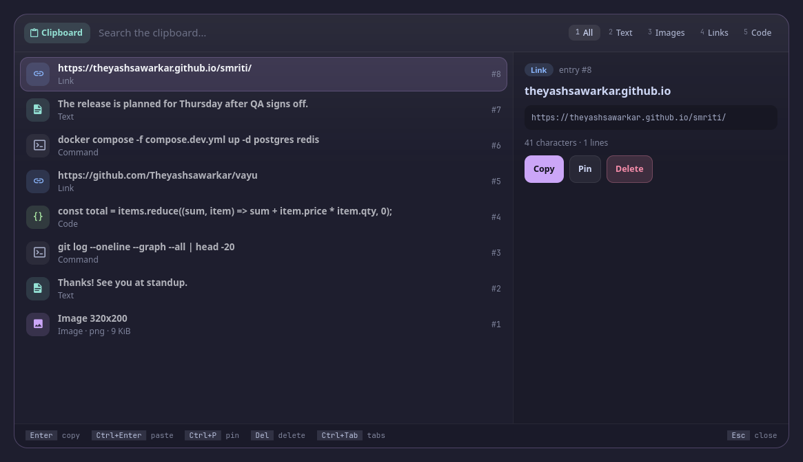

Screenshots use made-up demo data.
Smriti (स्मृति) is Sanskrit for "memory": everything you copied, remembered.
smriti is clipboard history for Vyom: one keyboard-driven panel that opens instantly, with live data, a preview and a key for everything. It runs on any compositor with the layer-shell protocol (sway, Hyprland, river, niri, Wayfire, labwc…). In Vayu, the desktop it was built for, it replaces cliphist list | wofi --dmenu.
#Features
- Your cliphist history grouped by when you copied it: Pinned, Just now, Today, Yesterday, Older, with an age on every row.
- Each entry recognised as a link, image, code, command, email or text, each with its own colour and icon (link blue, code green, command peach, image mauve, text teal), and a filter tab for each in the same colour.
- Images as thumbnails right in the list, links with their site, code and commands in a monospace font.
- A full preview: the whole text (not cliphist's cut-off line), code with syntax colours, how long ago you copied it.
Entercopies;Ctrl+Entercopies and pastes into the window you were in.- Pin what you reuse (
m); delete what shouldn't be kept (d d, which asks first: it can't be undone). - cliphist keeps no times, so smriti notes them while Vyom runs (it watches the clipboard with
wl-paste --watch); entries from before that are under Older. - Keyboard first: every action has a key, shown in the footer; the mouse works too.
- Never freezes the panel: slow commands run in the background.
#Install
#Requirements
- Vyom 0.6.0 or newer (Python 3.11+, PyGObject, GTK 4, gtk4-layer-shell, a Nerd Font)
cliphist,wl-copy(andwl-paste, to note when you copied each entry)- optional: wtype (Ctrl+Enter paste)
#Install
git clone https://github.com/Theyashsawarkar/smriti ~/.local/share/vyom/plugins/smriti
vyom reload # pick it up (or log out and in)
vyom smriti # open it; run it again to closeGive it a key in your compositor, e.g. sway:
bindsym $mod+<key> exec vyom smriti#Update and uninstall
git -C ~/.local/share/vyom/plugins/smriti pull && vyom reload # update
rm -rf ~/.local/share/vyom/plugins/smriti && vyom reload # uninstall#Usage
Open it with vyom smriti (or your key). It opens in insert mode: type to search. Esc goes to normal mode, where every key is a command and Space is the leader (a strip shows what comes next); i or / types again. The footer always shows the keys for what's selected.
Vyom's keys work too (every vim tool has them): ? and Space ? list every key, Space Space is the palette, j / k move, gg / G jump, / searches again, H / L switch tabs, q closes, Space u f is fullscreen, Esc steps back.
Insert mode (typing; smriti opens in it)
| Key | Action |
|---|---|
Enter | Copy the selected entry |
Ctrl+Enter | Paste the selected entry (copies it, then pastes into your window) |
Normal mode
| Key | Action |
|---|---|
Enter | Copy the selected entry and close |
p | Paste the selected entry into your window |
y y | Copy the selected entry and stay open |
m | Pin or unpin the selected entry |
d d | Delete the selected entry (a pinned one: unpin it; asks first) |
Both modes
| Key | Action |
|---|---|
Ctrl+P | Pin or unpin the selected entry |
Leader (Space)
| Key | Action |
|---|---|
Space y y | Copy the selected entry and stay open |
Space y p | Copy the selected entry's text, trimmed |
Space m p | Pin or unpin the selected entry |
Space d d | Delete the selected entry (asks first) |
Space d a | Clear the whole history; pins stay (asks first) |
Space o b | Open the selected link in the browser |
Space o e | Open the selected entry in $EDITOR |
#Configuration
Everything is optional, in ~/.config/vyom/config.toml under [plugin.smriti]:
| Setting | Default | What it does |
|---|---|---|
track_times | true | Watch the clipboard to note when each entry was copied (false: no watcher; entries get the time smriti first listed them) |
Run vyom reload after editing.
#Troubleshooting
- Nothing opens.
vyom listshows every installed tool, and why one is skipped (a missing requirement, or a Vyom that's too old). - It opened, then something failed. Look for a
Tracebackin the daemon's log,journalctl --user -u vyom -u vyom-daemon -b(without systemd:~/.local/state/vyom/daemon.log), and open an issue with it. - No blur or rounded corners. That's the compositor: on SwayFX, add
layer_effects "vyom" { blur enable; corner_radius 20; shadows enable }.
#The Vyom family
Each tool is its own repository, so you install only the ones you want:
| Tool | What it does | |
|---|---|---|
| dvara | द्वार, gateway | The app launcher |
| ganit | गणित, mathematics | The calculator and converter |
| smriti (this one) | स्मृति, memory | Clipboard history |
| bhava | भाव, feeling, emotion | The emoji picker |
| tarang | तरंग, wave | Wi‑Fi and the hotspot |
| setu | सेतु, bridge | Bluetooth |
| doot | दूत, messenger | Your phone, through KDE Connect |
| patra | पात्र, vessel | Docker containers |
| akashvani | आकाशवाणी, voice from the sky | Notifications |
| raga | राग, melody | YouTube music and video |
| mudra | मुद्रा, gesture | Keybinding search |
| urja | ऊर्जा, energy | The battery at a glance |
| vishram | विश्राम, rest | The power menu |
| kendra | केन्द्र, centre | Quick settings |
#Contributing
Bug reports, ideas and pull requests are welcome: see CONTRIBUTING.md for the development setup and the few rules every tool follows, and CHANGELOG.md for what changed in each release. Please report security issues privately (SECURITY.md).
#License
MIT.